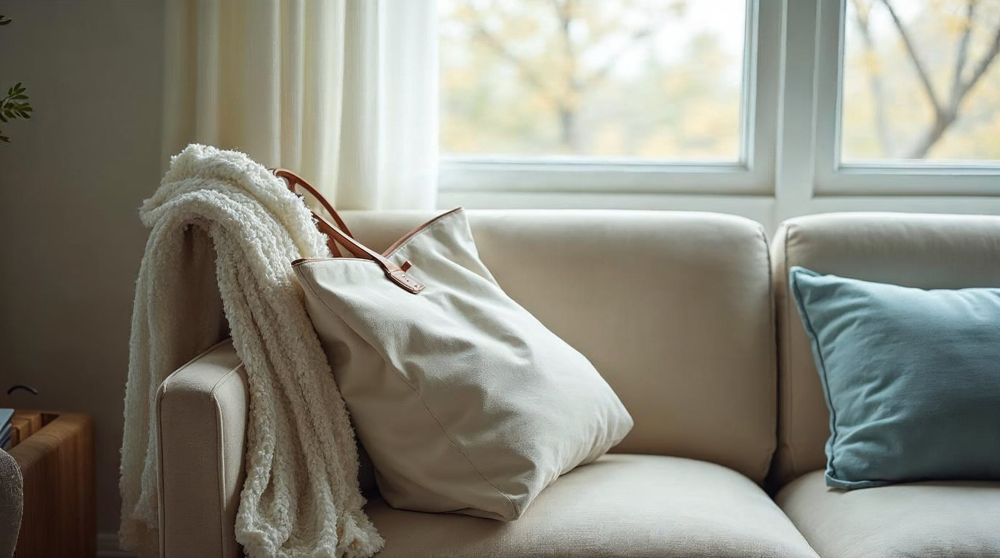
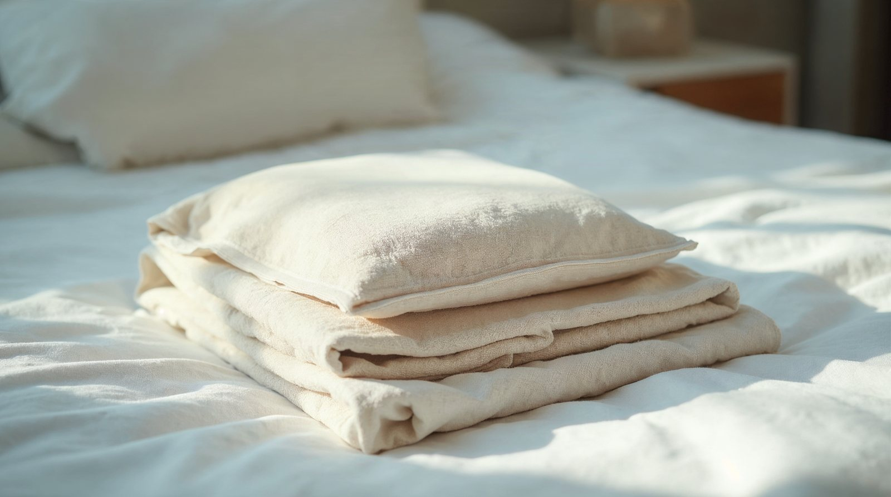
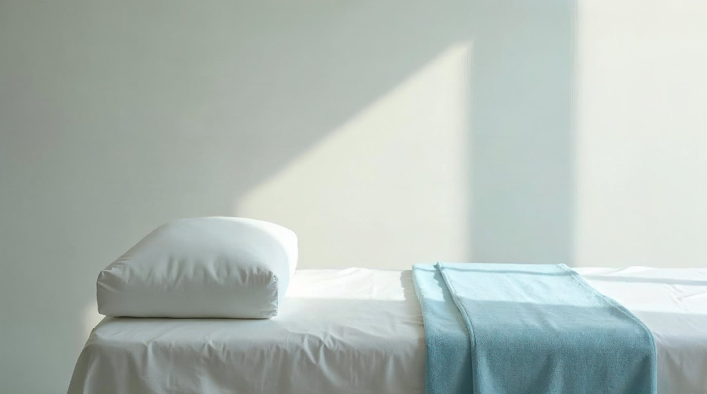
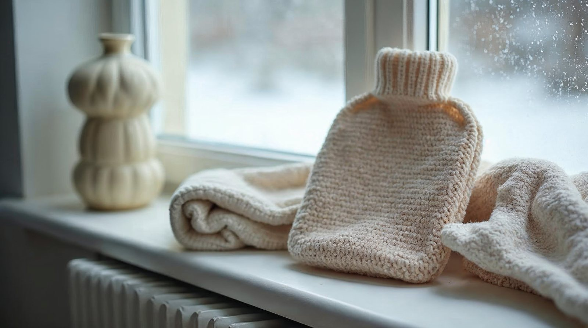
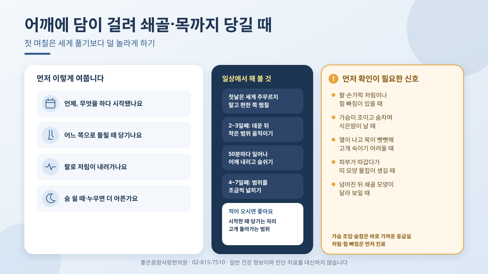

이종호 한의사 감수좋은꿈참사랑한의원 대표원장 (한의사 면허번호 19769)발행 2026-11-25 · 수정 2026-11-25
이 글의 차례
어깨에 담이 걸려 쇄골과 목 주변까지 당길 때, 첫 며칠은 '세게 풀기'보다 '덜 놀라게 하기'가 먼저입니다. 흔히 담이라고 부르는 갑작스러운 결림은 근육이 갑자기 긴장해 스스로 굳은 경우가 많은데, 어깨 위쪽 근육이 뒤통수와 목에서 쇄골까지 이어져 있어 어깨에서 시작된 당김이 쇄골과 목으로 번지듯 느껴지기 쉽습니다.
그래서 첫날은 아픈 쪽으로 억지로 돌리거나 세게 주무르지 말고, 편한 쪽 찜질과 베개·자세 조정으로 근육이 쉴 틈을 만들어 줍니다. 2~3일째부터는 따뜻하게 데운 뒤 아프지 않은 범위에서 조금씩 움직이는 범위를 넓히고, 일주일 동안 하루하루 고개가 돌아가는 정도를 비교해 봅니다.
다만 팔이나 손가락으로 저림이 내려가거나 힘이 빠질 때, 가슴이 조이거나 숨이 찰 때, 열이 함께 날 때는 담으로 여기고 지켜보기보다 먼저 확인을 받으셔야 합니다.
왜 담이 걸리면 쇄골과 목까지 당길까요
- '담'은 의학 진단명이 아니라 갑자기 근육이 뭉치고 결려 움직이기 어려운 상태를 흔히 부르는 말입니다. 한의학에서 몸 안의 진액이 잘 돌지 못하고 뭉친 것을 '담음(痰飮)'이라 하는데, 이 말에서 왔다는 설명도 있습니다. 실제로는 근육과 근육을 싸고 있는 막이 갑자기 긴장해 굳은 상태를 두루 가리키는 경우가 많습니다.
- 근육은 갑작스러운 동작이나 찬 기운 같은 자극을 받으면 그 부위를 지키려고 스스로 단단히 굳는 반응을 보이기도 합니다. 이 굳음이 다시 통증을 부르고, 통증 때문에 더 굳는 고리가 생기면 처음 하루 이틀이 가장 뻣뻣하게 느껴지기 쉽습니다.
- 어깨 위쪽을 덮는 등세모근(승모근) 윗부분은 뒤통수와 목 뒤에서 시작해 쇄골 바깥쪽과 어깨 끝에 붙습니다. 귀 뒤에서 비스듬히 내려오는 목빗근(흉쇄유돌근)은 쇄골 안쪽과 가슴뼈에, 목뼈 옆에서 내려오는 목갈비근(사각근)은 쇄골 뒤쪽의 첫째·둘째 갈비뼈에 이어집니다. 그래서 어깨에서 시작된 결림이 쇄골과 목 주변까지 줄을 당기듯 함께 느껴질 수 있습니다.
- 흔한 계기로는 높이가 맞지 않는 베개나 소파 팔걸이에 머리를 걸치고 잔 일, 찬 바람에 어깨를 움츠린 채 오래 서 있던 일, 뒷좌석 물건을 잡으려 몸을 비튼 동작, 모니터를 보다 고개를 갑자기 돌린 동작, 평소 하지 않던 무거운 짐 나르기가 있습니다. 목뼈 사이의 작은 관절이 순간 자극을 받아 주변 근육이 함께 굳는 경우도 있다고 알려져 있습니다.
- 잠이 모자라거나 피로와 긴장이 쌓인 시기에는 같은 동작에도 결림이 더 쉽게 옵니다. 긴장하면 어깨를 들썩이며 가슴으로만 얕게 숨 쉬는 습관이 생기기 쉬운데, 이때 목 앞쪽과 쇄골 위 근육이 숨쉬기를 돕느라 하루 종일 쉬지 못하게 됩니다.
- 근육 쪽 결림은 며칠에서 1~2주 사이에 조금씩 풀리는 흐름을 보이는 경우가 많다고 알려져 있습니다. 다만 목에서 팔로 내려가는 신경, 어깨 힘줄, 가슴 안쪽 장기, 피부 신경에 생기는 대상포진도 처음에는 비슷한 결림으로 시작할 수 있어, 첫 며칠의 흐름을 지켜보며 구분하는 것이 중요합니다.
- 한의학에서는 찬 기운과 피로 속에 기혈이 잘 돌지 못해 근육이 굳고 당기는 모습으로 살피기도 합니다. 그래서 어깨와 목만이 아니라 잠, 소화, 몸이 찬 정도, 마음의 긴장도 함께 여쭙습니다.
자주 하는 오해
- "담은 세게 주물러야 풀린다"고 여기기 쉽지만, 처음 하루 이틀 예민해진 근육을 세게 누르거나 비틀면 오히려 더 단단히 굳거나 멍이 들 수 있습니다. 이 시기에는 손바닥으로 가볍게 쓸어 주는 정도가 알맞습니다.
- 목을 '뚝' 소리가 나게 꺾으면 풀린다고 생각하는 분도 있습니다. 스스로 하든 다른 사람이 해 주든 목을 갑자기 비틀거나 꺾는 동작은 목의 신경과 혈관에 부담이 될 수 있어 피합니다.
- 반대로 움직이면 덧날까 봐 고개를 아예 고정하고 지내기도 합니다. 아프지 않은 범위의 작은 움직임까지 멈추면 주변 근육까지 함께 굳어 풀리는 데 시간이 더 걸릴 수 있습니다.
- 파스를 여러 장 겹쳐 오래 붙일수록 좋다고 여기기도 합니다. 피부가 짓무르거나 가렵기 쉽고, 파스 위에 뜨거운 찜질팩을 겹치면 화상을 입을 수 있어 설명서에 적힌 시간만 붙이고 찜질과는 따로 합니다.
- 쇄골까지 당기니 뼈를 다친 것이 아닐까 걱정하는 분도 있습니다. 넘어지거나 부딪힌 일이 없다면 근육의 연결 때문에 당기는 경우가 많지만, 다친 뒤라면 뼈와 관절 확인이 먼저입니다.

상황별 예시
- 예를 들어 찬 바람이 부는 아침 버스 정류장에서 어깨를 움츠린 채 20분 넘게 기다렸다가, 오후에 모니터를 보던 중 고개를 돌리는 순간 오른쪽 목 뒤에서 어깨 위, 쇄골 바깥쪽까지 '뜨끔' 하고 당긴 경우입니다. 고개를 돌리거나 숙일 때만 아프고, 목 뒤와 날개뼈 위 모서리를 누르면 아픈 자리가 짚이며, 팔로 내려가는 저림은 없다면 근육 쪽 결림을 먼저 생각해 볼 수 있습니다. 첫날은 목도리로 목과 어깨를 덮고, 모니터를 몸 정면으로 옮기고, 저녁에 따뜻한 샤워로 데우는 것부터 해 봅니다.
- 예를 들어 소파 팔걸이를 베고 텔레비전을 보다 잠들었다가 깨어 보니, 왼쪽 귀 뒤에서 쇄골 안쪽까지 줄이 당기는 느낌이 들고 세수할 때 고개를 숙이기 어려운 경우입니다. 목빗근이 한쪽으로 늘어난 채 오래 있었던 자리일 수 있어, 그날 밤에는 베개 높이를 맞추고 수건을 말아 목 아래 빈 곳을 받쳐 고개가 한쪽으로 꺾이지 않게 합니다.
- 예를 들어 김장 배추 상자를 옮기다 어깨 위쪽에서 '뚝' 하는 느낌과 함께 통증이 시작되고, 그 뒤 팔을 옆으로 들 때 어깨 끝과 쇄골 바깥쪽이 아픈 경우입니다. 근육뿐 아니라 어깨 힘줄이나 쇄골과 어깨뼈가 만나는 관절(견봉쇄골관절)을 함께 확인해야 할 수 있어, 팔을 어디까지 들 수 있는지 반대쪽과 비교해 두고, 들 수 없거나 어깨 모양이 달라 보이면 먼저 진료를 받습니다.
- 예를 들어 감기로 며칠 기침을 하다가 왼쪽 쇄골 아래와 어깨가 당기기 시작했는데, 숨을 깊게 들이쉴 때 더 아프고 미열이 이어지는 경우입니다. 기침으로 갈비뼈 사이 근육이 무리한 경우도 있지만 폐나 가슴막 쪽 확인이 먼저 필요할 수 있어, 담으로 여기고 찜질만 하기보다 진료를 먼저 받습니다.
- 예를 들어 목에서 어깨로 결리면서 엄지와 검지 끝이 저리고, 고개를 뒤로 젖히거나 아픈 쪽으로 기울이면 저림이 손끝까지 뻗치는 경우입니다. 이때는 어깨 근육보다 목에서 팔로 내려가는 신경 쪽을 함께 살펴야 할 수 있습니다.
먼저 이렇게 여쭙니다
- 언제, 무엇을 하다가 시작됐는지 여쭙니다. 자고 일어나서인지, 고개를 돌리다가인지, 물건을 들다가인지에 따라 살필 순서가 달라집니다.
- 어느 방향으로 고개를 돌리거나 숙이고 젖힐 때 가장 당기는지, 팔을 들 때도 아픈지 여쭙니다.
- 당기는 자리가 목 뒤인지, 어깨 위인지, 쇄골 위나 아래인지, 날개뼈 사이인지 손가락으로 짚어 달라고 부탁드립니다.
- 팔이나 손가락으로 저림이 내려가는지, 물건을 쥐는 힘이 양쪽 같은지 여쭙니다.
- 숨을 깊게 쉴 때, 기침할 때, 누웠을 때 더 아픈지, 가슴이 답답한 느낌은 없는지 여쭙니다.
- 열이나 오한이 있는지, 아픈 자리 피부가 따갑거나 옷이 스치기만 해도 불편한지 여쭙니다.
- 그사이 찜질, 파스, 진통제, 마사지 가운데 무엇을 해 봤고 그 뒤 어땠는지 여쭙니다.
- 요즘 잠과 피로, 일과 마음의 긴장은 어떤지, 비슷한 결림이 올해 몇 번째인지 함께 여쭙니다.
당기는 자리로 보는 단서
손가락 하나로 가장 당기는 자리를 짚어 보면 어느 근육이 주로 굳었는지 가늠하는 데 도움이 됩니다. 이 구분은 진단이 아니라 진료에서 무엇부터 확인할지 정하는 단서입니다.
목 옆 뒤쪽에서 날개뼈 위 안쪽 모서리까지
- 목뼈 윗부분에서 날개뼈 위 안쪽 모서리로 내려가는 어깨올림근(견갑거근) 쪽 단서입니다. 흔히 '자고 일어났더니 목이 안 돌아간다'고 하는 결림이 이 자리인 경우가 많습니다.
- 고개를 숙여 반대쪽 겨드랑이를 내려다보는 동작에서 당김이 커지고, 고개를 돌려 어깨 너머를 보기가 어려운 경우가 많습니다.
어깨 위 능선에서 쇄골 바깥쪽까지
- 등세모근 윗부분 쪽 단서입니다. 어깨 위를 손으로 집듯 잡았을 때 단단한 띠가 느껴지고, 귀를 반대쪽 어깨로 기울일 때 당김이 커지는 경우가 많습니다.
- 이 자리가 굳으면 관자놀이나 머리 옆까지 묵직한 느낌이 함께 오기도 합니다.
귀 뒤에서 쇄골 안쪽까지 비스듬한 줄
- 목빗근 쪽 단서입니다. 고개를 돌리거나 위를 올려다볼 때 목 앞쪽에 줄이 당기는 느낌이 들고, 이마나 귀 주변이 함께 묵직하다는 분도 있습니다.
- 소파나 차 안에서 고개가 한쪽으로 꺾인 채 잠든 다음 날 이 자리가 당기는 경우가 흔합니다.
쇄골 위 오목한 곳
- 목갈비근 쪽 단서입니다. 이 근육 사이로 팔로 가는 신경과 혈관이 지나가기 때문에, 이 자리가 당기면서 팔이 저리거나 손이 차고 무거운 느낌이 함께 있다면 근육 결림으로만 보지 않고 목 신경과 함께 확인합니다.
쇄골 아래에서 가슴 앞쪽까지
- 어깨가 앞으로 말린 자세에서 굳기 쉬운 가슴 근육 쪽 단서입니다. 팔을 뒤로 젖히거나 문틀을 짚고 가슴을 내밀 때 당김이 커지는 경우가 많습니다.
- 다만 이 자리의 통증이 움직임과 상관없이 오고 가슴이 조이거나 숨이 차다면, 근육이 아니라 심장이나 폐 쪽일 수 있어 먼저 확인이 필요합니다.
스스로 점검해 보세요
- 가장 아픈 자리를 손가락으로 눌러 짚을 수 있다.
- 특정 방향으로 움직일 때만 아프고, 가만히 있으면 덜하다.
- 하루하루 고개가 돌아가는 범위가 조금씩 늘고 있다.
- 팔꿈치 아래, 손가락까지 내려가는 저림은 없다.
- 물건을 쥐는 힘과 팔을 들고 버티는 힘이 양쪽 비슷하다.
- 숨을 깊게 쉬거나 기침할 때 가슴 쪽 통증이 커지지 않는다.
- 열이나 오한, 피부가 따가운 느낌 없이 시작됐다.
앞의 세 가지는 근육 쪽 결림에서 흔히 보이는 모습이고, 뒤의 네 가지는 다른 원인을 먼저 떠올려야 할 신호가 없는지 보는 항목입니다. 모두 해당해도 진단이 아니라 단서이며, 뒤의 네 가지 가운데 하나라도 해당하지 않는다면 집에서 지켜보기보다 먼저 확인을 받으세요.

일상에서 먼저 해 볼 수 있는 것
근육 쪽 결림이라면 첫 며칠은 놀란 근육을 가라앉히고, 그다음 조금씩 움직이는 범위를 넓히는 순서로 갑니다. 아래 날짜는 대략의 기준이며, 통증의 흐름에 맞춰 앞당기거나 늦춥니다.
첫날(시작하고 24시간 안쪽)
- 아픈 방향으로 억지로 돌리거나 끝까지 꺾지 않습니다. 대신 아프지 않은 범위에서 고개를 천천히 끄덕이고, 어깨를 살짝 올렸다 내리는 작은 움직임을 한두 시간에 한 번씩 몇 번만 합니다.
- 찜질은 편한 쪽을 고릅니다. 무거운 것을 들다 다친 것처럼 계기가 분명하고 그 자리가 붓거나 열감이 있으면 얇은 수건으로 감싼 냉찜질을 10~15분, 붓기 없이 뻣뻣하게 굳은 느낌이면 따뜻한 찜질을 15~20분 합니다. 어느 쪽이 편했는지 적어 두고, 찜질팩을 댄 채 잠들지 않습니다.
- 앉아 있을 때는 아픈 쪽 팔꿈치 아래에 쿠션이나 접은 수건을 받쳐 팔 무게가 어깨에 매달리지 않게 합니다. 어깨 위 근육이 팔 무게를 덜 버티게 하는 방법입니다.
- 가방은 아픈 쪽 어깨에 메지 않고, 무거운 짐은 다른 날로 미룹니다.
- 고개를 돌려 어깨 너머를 확인하기 어렵다면 운전은 미루는 편이 안전합니다.
- 진통소염제를 드신다면 설명서의 용량을 지키고, 위장 질환이 있거나 혈액을 묽게 하는 약, 신장 질환 약을 드시는 분은 약사와 먼저 상의합니다.
첫날 밤 잠자리
- 반듯이 누울 때는 목 아래 빈 곳을 채우는 높이로 베개를 맞추고, 수건을 돌돌 말아 목 아래에 받치면 고개가 한쪽으로 꺾이지 않습니다.
- 옆으로 누울 때는 아프지 않은 쪽을 아래로 하고, 베개 높이를 어깨 너비만큼 맞추며, 아픈 팔은 베개 하나를 끌어안듯 올려 둡니다.
- 엎드려 자거나 소파에서 잠드는 것은 며칠 피합니다.
- 잠들기 전 따뜻한 물로 3~5분 목과 어깨를 데우고, 숨을 길게 내쉬며 어깨를 아래로 내려놓습니다.
2~3일째(조금씩 움직이기 시작)
- 아침에 따뜻한 샤워나 찜질로 10분 정도 데운 직후가 움직이기 좋은 때입니다. 의자에 바르게 앉아 아래 동작을 각각 5~10번, 하루 3~4번 합니다. 아픈 지점 바로 앞에서 멈추고 반동은 주지 않습니다.
- 턱 당기기: 턱을 살짝 뒤로 당겨 뒷목을 길게 했다가 풉니다.
- 어깨 으쓱하기: 어깨를 귀 쪽으로 올렸다가 힘을 빼고 툭 떨어뜨립니다.
- 날개뼈 모으기: 양쪽 날개뼈를 등 가운데로 모아 5초 머물렀다 풉니다.
- 고개 돌리기: 아프지 않은 쪽부터 천천히 돌리고, 아픈 쪽은 덜 가도 괜찮습니다.
- 찜질은 따뜻한 쪽으로 옮겨 가고, 일하는 동안에는 50분마다 일어나 어깨를 내리고 배가 부풀도록 숨을 다섯 번 깊게 쉽니다.
4~7일째(범위를 넓히기)
- 결림이 줄어 움직임에 여유가 생기면 가벼운 늘이기를 더합니다. 각각 15~20초 머물고, 양쪽을 같은 시간 동안 합니다.
- 어깨 위와 쇄골 바깥쪽이 당긴다면 아픈 쪽 손으로 의자 바닥을 잡고, 귀를 반대쪽 어깨 쪽으로 천천히 기울입니다.
- 목 옆 뒤쪽과 날개뼈 위가 당긴다면 고개를 숙여 반대쪽 겨드랑이를 내려다보는 방향으로 기울입니다.
- 쇄골 아래와 가슴 앞이 당긴다면 문틀에 팔꿈치를 어깨 높이로 대고 몸을 앞으로 반 걸음 내밀어 가슴 앞을 늘입니다.
- 하루 20~30분 걸으며 팔을 자연스럽게 흔들어 봅니다. 원래 하던 운동은 평소의 절반 정도 세기부터 다시 시작하고, 한쪽 어깨로 짐을 나르는 일은 결림이 다 가라앉은 뒤로 미룹니다.

한의원에서 함께 살필 수 있는 경우
- 결림은 줄었지만 목과 어깨가 늘 무겁고, 고개를 끝까지 돌리면 여전히 당기는 경우
- 같은 자리에 담이 한 해에도 여러 번 반복되는 경우
- 결림과 함께 두통, 눈의 피로, 얕은 잠이 이어지는 경우
- 어느 근육이 굳었는지 확인하고, 집에서 어떤 순서로 움직이면 좋을지 함께 정하고 싶은 경우
좋은꿈참사랑한의원에서는 첫 방문 때 언제 무엇을 하다 시작됐는지, 그사이 해 본 것과 그 뒤 어땠는지를 먼저 듣고 맥부터 짚어 봅니다. 진맥으로 잠과 피로, 몸이 찬 정도, 긴장된 정도처럼 몸 전체의 리듬을 살핀 뒤, 고개를 숙이고 젖히고 돌리고 기울이는 움직임과 팔을 드는 움직임을 양쪽 비교합니다.
당기는 자리를 손으로 짚어 목 뒤, 어깨 위, 쇄골 위아래, 날개뼈 사이 가운데 어디가 예민한지 찾고, 팔 감각과 쥐는 힘이 양쪽 고른지도 확인합니다.
필요하다고 판단되면 초음파로 어깨 주변 근육과 힘줄을 양쪽 비교해 살펴봅니다. 팔 저림이나 힘 빠짐이 있어 목 신경 쪽 확인이 먼저라고 판단되거나, 숨참과 가슴 통증처럼 가슴 안쪽 문제가 의심되면 검사가 가능한 의료기관을 먼저 안내합니다.
그 뒤 상태와 몸에 맞춰 침, 약침, 온열 치료, 추나 등을 신중하게 정하고, 결림이 막 시작된 예민한 시기에는 자극의 세기를 낮춥니다. 진료를 마치면 집에서 이어 갈 찜질과 움직임의 순서를 안내하고, 다시 오시면 지난번 돌아가지 않던 방향과 밤잠이 어땠는지부터 이어서 여쭙습니다. 보험 적용 여부는 방문 전 전화(02-815-7510)로 확인해 주세요.

얼마나 지켜보고 언제 상담할까요
- 근육 쪽 결림이라면 하루하루 고개가 돌아가는 범위가 조금씩 넓어지는지가 지켜보는 기준입니다. 매일 아침 같은 자리에 서서 고개를 돌려 어깨 너머로 어디까지 보이는지, 통증은 0~10 가운데 몇 점인지 적어 비교합니다.
- 2~3일이 지나도 달라지는 기미 없이 그대로이거나 오히려 더 심해진다면, 또는 통증 때문에 밤에 자주 깬다면 진찰을 받아 보시길 권합니다.
- 1주가 지나도 운전할 때 고개 돌리기, 머리 감기, 옷 입기처럼 일상 동작이 어렵다면 다른 원인이 없는지 함께 확인합니다.
- 같은 자리 담이 한 해에도 여러 번 반복된다면, 결림이 없는 때에 베개와 책상, 가방, 잠과 긴장 습관을 함께 점검해 보는 것이 좋습니다.
- 아래 '먼저 확인이 필요한 증상'이 하나라도 있다면 기다리지 않습니다.
이렇게 기록해 오시면 상담이 쉬워집니다
- 시작한 날과 시각, 그때 하던 일(잠, 고개 돌리기, 짐 들기, 운동 등)
- 가장 당기는 자리를 사진이나 그림에 표시한 것(목 뒤, 어깨 위, 쇄골 위·아래, 날개뼈 사이)
- 매일 아침 고개를 돌려 어깨 너머로 보이는 범위와 통증 점수(0~10)
- 가장 아픈 동작, 밤에 깬 횟수
- 해 본 것(냉·온찜질과 시간, 파스, 진통제, 마사지)과 그 뒤의 변화
- 팔 저림, 열, 피부 변화가 있었는지와 복용 중인 약
이런 증상은 먼저 확인이 필요합니다
- 팔이나 손가락으로 저림이 내려가거나, 팔과 손에 힘이 빠져 물건을 자꾸 놓치는 경우
- 가슴이 조이거나 답답하고 숨이 차며 식은땀이 나는 경우, 특히 왼쪽 어깨와 턱, 팔로 통증이 퍼지는 경우
이런 신호가 있으면 한의원보다 가까운 병원이나 응급실을 먼저 찾으세요.
관련 글
- 자고 일어나면 목이 아픈 것은 베개 때문일까요?
- 한파에 어깨를 움츠리고 출근한 날 목과 어깨가 굳으면 어떻게 살피나요?
- 목에서 팔로 저림이 내려올 때(목디스크 의심)는 어떤 점을 먼저 확인하나요?

여쭙는 것
- 언제, 무엇을 하다가 시작됐는지 여쭙니다. 자고 일어나서인지, 고개를 돌리다가인지,…
- 어느 방향으로 고개를 돌리거나 숙이고 젖힐 때 가장 당기는지, 팔을 들 때도 아픈지…
- 당기는 자리가 목 뒤인지, 어깨 위인지, 쇄골 위나 아래인지, 날개뼈 사이인지 손가…
생활에서 해 볼 것
- 아픈 방향으로 억지로 돌리거나 끝까지 꺾지 않습니다. 대신 아프지 않은 범위에서 고…
- 찜질은 편한 쪽을 고릅니다. 무거운 것을 들다 다친 것처럼 계기가 분명하고 그 자리…
- 앉아 있을 때는 아픈 쪽 팔꿈치 아래에 쿠션이나 접은 수건을 받쳐 팔 무게가 어깨에…
한의원에서 함께 살필 것
- 결림은 줄었지만 목과 어깨가 늘 무겁고, 고개를 끝까지 돌리면 여전히 당기는 경우
- 같은 자리에 담이 한 해에도 여러 번 반복되는 경우
- 결림과 함께 두통, 눈의 피로, 얕은 잠이 이어지는 경우
먼저 확인이 필요한 신호
- 팔이나 손가락으로 저림이 내려가거나, 팔과 손에 힘이 빠져 물건을 자꾸 놓치는 경우
- 가슴이 조이거나 답답하고 숨이 차며 식은땀이 나는 경우, 특히 왼쪽 어깨와 턱, 팔…
한눈에 보는 표
| 구분 | 핵심 |
|---|---|
| 여쭙는 것 | 언제, 무엇을 하다가 시작됐는지 여쭙니다. 자고 일어나서인지, 고개를 돌리다가인지, 물건을 들다가인지에 따라 살필 순서가 달라집니다. 어느 방향으로 고개를 돌리거나 숙이고 젖힐 때 가장 당기는지, 팔을 들 때도 아픈지 여쭙니다. |
| 생활에서 해 볼 것 | 아픈 방향으로 억지로 돌리거나 끝까지 꺾지 않습니다. 대신 아프지 않은 범위에서 고개를 천천히 끄덕이고, 어깨를 살짝 올렸다 내리는 작은 움직임을 한두 시간에 한 번씩 몇 번만 합니다. 찜질은 편한 쪽을 고릅니다. 무거운 것을 들다 다친 것처럼 계기가 분명하고 그 자리가 붓거나 열감이 있으면 얇은 수건으로 감싼 냉찜질을 10~15분, 붓기 없이 뻣뻣하게 굳은 느낌이면 따뜻한 찜질을 15~20분 합니다. 어느 쪽이 편했는지 적어 두고, 찜질팩을 댄 채 잠들지 않습니다. |
| 한의원에서 함께 살필 것 | 결림은 줄었지만 목과 어깨가 늘 무겁고, 고개를 끝까지 돌리면 여전히 당기는 경우 같은 자리에 담이 한 해에도 여러 번 반복되는 경우 |
| 먼저 확인이 필요한 신호 | 팔이나 손가락으로 저림이 내려가거나, 팔과 손에 힘이 빠져 물건을 자꾸 놓치는 경우 가슴이 조이거나 답답하고 숨이 차며 식은땀이 나는 경우, 특히 왼쪽 어깨와 턱, 팔로 통증이 퍼지는 경우 |
자주 묻는 질문
담은 정확히 무엇인가요?
의학 진단명이 아니라 갑자기 근육이 뭉치고 결려 움직이기 어려운 상태를 흔히 부르는 말입니다. 근육 쪽 결림인 경우가 많지만 목 신경이나 어깨 힘줄, 가슴 안쪽 문제도 비슷하게 시작할 수 있어, 팔 저림이나 숨참, 열이 있으면 먼저 확인합니다.
찜질은 차갑게 하나요, 따뜻하게 하나요?
무거운 것을 들다 다친 것처럼 계기가 분명하고 붓거나 열감이 있으면 처음 하루 이틀은 냉찜질을 10~15분, 붓기 없이 뻣뻣하게 굳은 느낌이면 따뜻한 찜질을 15~20분 해 봅니다. 편했던 쪽을 기록해 두고, 찜질팩을 댄 채 잠들지 않습니다.
담 걸린 곳을 세게 주무르거나 목을 꺾어도 되나요?
처음 하루 이틀은 세게 누르거나 비틀지 않고 손바닥으로 가볍게 쓸어 주는 정도가 알맞습니다. 목을 갑자기 꺾어 소리를 내는 동작은 목의 신경과 혈관에 부담이 될 수 있어 피합니다.
며칠이 지나도 그대로면 어떻게 하나요?
2~3일이 지나도 고개가 돌아가는 범위가 그대로이거나 더 심해지면 진찰을 받아 보시길 권합니다. 팔 저림이나 힘 빠짐, 가슴 통증, 숨참, 열이 함께 있다면 날짜와 상관없이 먼저 확인합니다.
담이 자주 반복되는데 어떻게 하면 좋을까요?
같은 자리에 반복된다면 베개 높이, 모니터와 가방 위치, 잠과 긴장 습관처럼 그 자리에 부담을 주는 생활을 함께 살펴봅니다. 진료에서는 맥부터 짚어 잠과 피로, 몸이 찬 정도를 함께 보고, 결림이 없는 때에 바꿔 볼 순서를 정합니다.
좋은꿈참사랑한의원은 재진 때 지난번 이야기부터 이어서 여쭙니다. 진료시간과 예약은 오시는 길에서 확인하세요.
어디서 상담받을 수 있나요?
좋은꿈참사랑한의원은 서울 동작구 만양로2길 2 신성빌딩 3층·5층(서울 동작구 상도동, 7호선 상도역 3번 출구 근처)에 있습니다. 한의사 3명(이종호 대표원장, 조영기 수석진료원장, 정원영 진료원장)이 진료합니다. 진료시간은 평일 09:30~20:00(점심 13:00~14:00), 토·일·공휴일 09:30~15:00이며, 방문 전 전화로 확인을 권합니다. 예약은 네이버 예약, 카카오톡 상담, 전화 02-815-7510로 받습니다.
이 글은 일반적인 건강 정보이며 개인의 진단이나 치료를 대신하지 않습니다. 증상이 있거나 복용 중인 약이 있다면 진료를 통해 확인하세요. 치료 효과는 개인마다 다를 수 있습니다.
작성 기준: 일반적으로 알려져 있는 건강 정보를 참고해 정리했습니다(대표원장 감수). 증상 기록은 1~2주 동안 하루 1회, 비슷한 시간에 적어 오시면 지난 상태와 비교하기 쉽습니다.